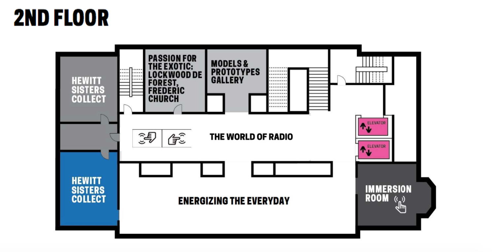
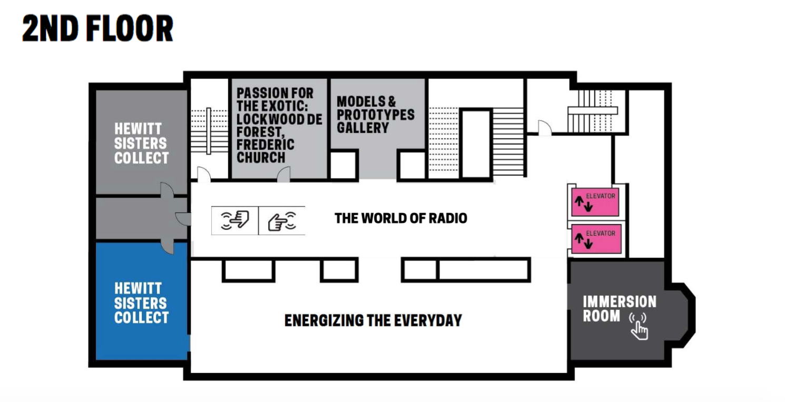

ACCESSIBILITY AT
COOPER HEWITT
Cooper Hewitt offers a variety of access services so that everyone can enjoy the museum—including the Arthur Ross Terrace and Garden— to the fullest extent possible. In the Great Hall, our Visitor Experience team is available to answer any questions about accessibility. Visitors may also email Cooper Hewitt or call 917.809.6732.


 



![In 1937, Cooper Hewitt acquired blueprints and drawings made by Swiss-American architect William Lescaze. The drawing above shows Lescaze’s 1934 plan for the redesign of New York’s Avon Theater at 251 W 45th street. The original theater, designed by architect Eugene De Rosa, was known as the Klaw Theatre. The name changed to the Avon Theater in 1929 and later to the CBS Radio Playhouse in 1934 when CBS hired Lescaze to redesign the theater. The most striking change Lescaze made to Eugene De Rosa’s original design was the addition of a radio control booth to the proscenium arch at stage left.](images/NEW SOUND FOR AN OLD THEATRE.jpg)